In [22]: runfile('C:/Users/eamiagr/OneDrive - Ericsson AB/Documents/Personal/DS Course/Project/PythonCode.py', wdir='C:/Users/eamiagr/OneDrive - Ericsson AB/Documents/Personal/DS Course/Project')
<class 'pandas.core.frame.DataFrame'>
RangeIndex: 1470 entries, 0 to 1469
Data columns (total 35 columns):
Age 1470 non-null int64
Attrition 1470 non-null object
BusinessTravel 1470 non-null object
DailyRate 1470 non-null int64
Department 1470 non-null object
DistanceFromHome 1470 non-null int64
Education 1470 non-null int64
EducationField 1470 non-null object
EmployeeCount 1470 non-null int64
EmployeeNumber 1470 non-null int64
EnvironmentSatisfaction 1470 non-null int64
Gender 1470 non-null object
HourlyRate 1470 non-null int64
JobInvolvement 1470 non-null int64
JobLevel 1470 non-null int64
JobRole 1470 non-null object
JobSatisfaction 1470 non-null int64
MaritalStatus 1470 non-null object
MonthlyIncome 1470 non-null int64
MonthlyRate 1470 non-null int64
NumCompaniesWorked 1470 non-null int64
Over18 1470 non-null object
OverTime 1470 non-null object
PercentSalaryHike 1470 non-null int64
PerformanceRating 1470 non-null int64
RelationshipSatisfaction 1470 non-null int64
StandardHours 1470 non-null int64
StockOptionLevel 1470 non-null int64
TotalWorkingYears 1470 non-null int64
TrainingTimesLastYear 1470 non-null int64
WorkLifeBalance 1470 non-null int64
YearsAtCompany 1470 non-null int64
YearsInCurrentRole 1470 non-null int64
YearsSinceLastPromotion 1470 non-null int64
YearsWithCurrManager 1470 non-null int64
dtypes: int64(26), object(9)
memory usage: 402.0+ KB
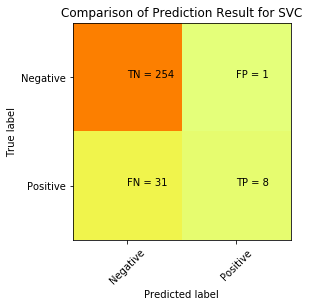
Accuracy of the Model SVC 89.1%
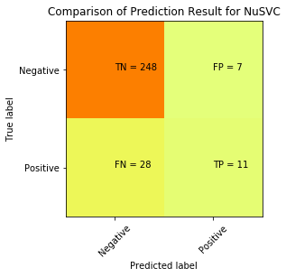
Accuracy of the Model NuSVC 88.1%
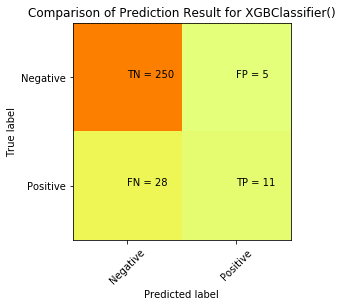
Accuracy of the Model XGBClassifier() 88.8%
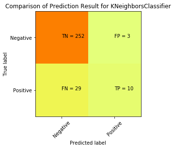
Accuracy of the Model KNeighborsClassifier 89.1%
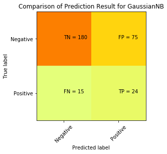
Accuracy of the Model GaussianNB 69.4%
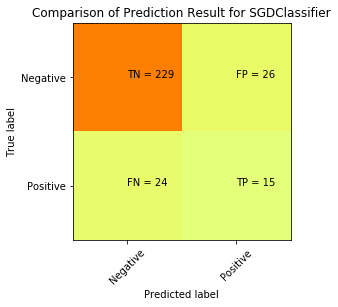
Accuracy of the Model SGDClassifier 83.0%
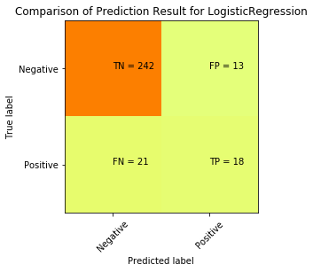
Accuracy of the Model LogisticRegression 88.4%
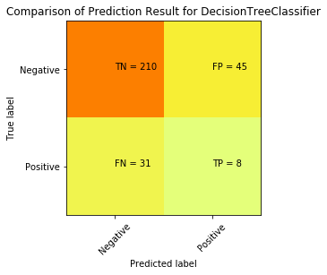
Accuracy of the Model DecisionTreeClassifier 74.1%
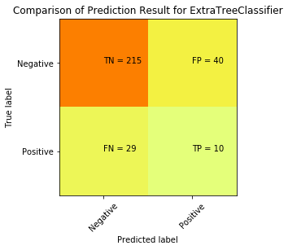
Accuracy of the Model ExtraTreeClassifier 76.5%
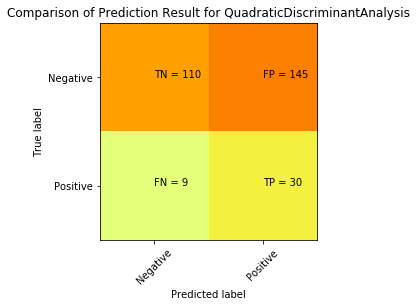
Accuracy of the Model QuadraticDiscriminantAnalysis 47.6%
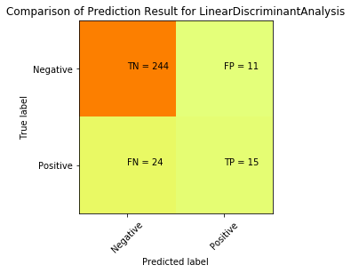
Accuracy of the Model LinearDiscriminantAnalysis 88.1%
Accuracy of the Model RandomForestClassifier 87.4%
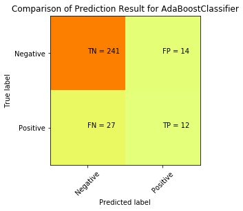
Accuracy of the Model AdaBoostClassifier 86.1%
Accuracy of the Model GradientBoostingClassifier 88.1%
In [23]: